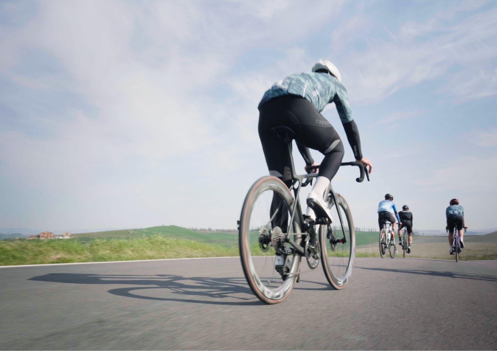

VIDEO SPORTIVI
TRANSVARAITA BIKE
SPORT EVENT RECAP – ‘20 - 2025Crew: Erika Grosso, Edoardo Blua, Gabriele Testa
Quattro giorni di gara tra i sentieri della Valle Varaita, al confine con la Francia.
Un progetto che ha richiesto un’attenta organizzazione logistica per riuscire a seguire la competizione e
catturarne l’energia, raccontando al tempo
stesso la bellezza e l’identità del territorio.


GRANFONDO - STRADE BIANCHE
SPORT EVENT AFTERMOVIE – ‘04:29 - 2025
Due giorni a Siena, tra il fascino delle sue strade storiche e
il ritmo della competizione.
Il video segue il Team OMCC nei momenti prima e dopo la
gara, raccontandone le emozioni.

TRAINING CAMP
SPORT EVENT AFTERMOVIE – 5:40 - 2025
Tre giorni per le strade tra Savona e Laigueglia verso la fine dell’
inverno.
Il video racconta l'esperienza ciclistica e l’allenamento del Team
OMCC.
EVENTI

FERMENTO IN LANGA
FOOD AND DRINK EVENT AFTERMOVIE – ‘00:50 - 2025Un evento all’interno del Baladin Open Garden firmato ItaliaSquisita, dove gastronomia, musica dal vivo e mixology si fondono in un’esperienza coinvolgente e benefica.

FERRARI TOUR
TEASER– ‘01:10 - 2025
Tour in Ferrari partendo dall'elegante Villa Spalletti ad Arcore per
poi concludersi nel cuore storico di Bergamo Alta, attraversando
le strade lungo il Lago di Lecco.
Il teaser mostra i momenti più salienti di questa avventura
organizzata da TERRAEVENTS.